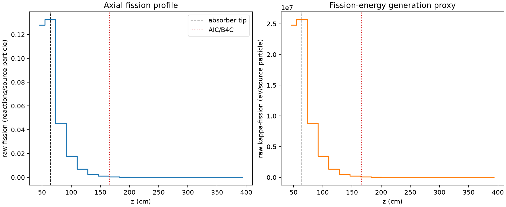
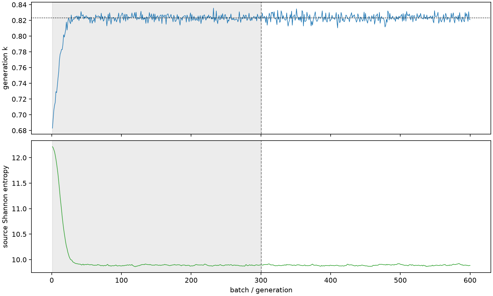

| field | value |
|---|---|
| experiment | V2-STAGE_256_OGRENCI_02-0010 |
| k | 0.8231905407491826 |
| MC standard error | 0.00017825608487485558 |
| seconds | 905.968688656998 |
| acceptance | not_assessed |
| convergence | review_required |
Completed is output integrity only; physical and statistical review required. Zero tallies do not prove zero production or zero uncertainty.
| diagnostic | value |
|---|---|
| geometric fuel voxels | 5280 |
| zero fission tally voxels | 1518 |
| low signal fuel voxels | 2851 |
| low signal fission share | 0.0001407312227301826 |
| low signal kappa share | 0.0001407877472575182 |
| important fission share | 0.9501264673043309 |
| previous filter included | 2429 |
| duration estimate s | 1562.5173488400023 |
| actual minus estimate s | -656.5486601830044 |
| fission relative MC error | statistics |
|---|---|
| all_geometric_fuel | {"voxels": 5280, "positive_mean_voxels": 3762, "zero_mean_voxels": 1518, "undefined_relative_error_voxels": 1518, "median": 0.06975624885009714, "p95": 0.9748858193592757, "maximum": 1.0000000000000002} |
| low_signal | {"voxels": 2851, "positive_mean_voxels": 1333, "zero_mean_voxels": 1518, "undefined_relative_error_voxels": 1518, "median": 0.5714953231773975, "p95": 1.0, "maximum": 1.0000000000000002} |
| important_95pct | {"voxels": 965, "positive_mean_voxels": 965, "zero_mean_voxels": 0, "undefined_relative_error_voxels": 0, "median": 0.004541538703789384, "p95": 0.011071788548151173, "maximum": 0.012210982548549047} |
| outside_previous_filter | {"voxels": 2851, "positive_mean_voxels": 1333, "zero_mean_voxels": 1518, "undefined_relative_error_voxels": 1518, "median": 0.5714953231773975, "p95": 1.0, "maximum": 1.0000000000000002} |
| kappa_fission relative MC error | statistics |
|---|---|
| all_geometric_fuel | {"voxels": 5280, "positive_mean_voxels": 3762, "zero_mean_voxels": 1518, "undefined_relative_error_voxels": 1518, "median": 0.06961621379739438, "p95": 0.9748639985443927, "maximum": 1.0000000000000002} |
| low_signal | {"voxels": 2851, "positive_mean_voxels": 1333, "zero_mean_voxels": 1518, "undefined_relative_error_voxels": 1518, "median": 0.5704611060568028, "p95": 1.0, "maximum": 1.0000000000000002} |
| important_95pct | {"voxels": 965, "positive_mean_voxels": 965, "zero_mean_voxels": 0, "undefined_relative_error_voxels": 0, "median": 0.0045341476074176774, "p95": 0.011052238068172621, "maximum": 0.012191448230399382} |
| outside_previous_filter | {"voxels": 2851, "positive_mean_voxels": 1333, "zero_mean_voxels": 1518, "undefined_relative_error_voxels": 1518, "median": 0.5704611060568028, "p95": 1.0, "maximum": 1.0000000000000002} |
| axial bin | fission share | kappa-fission share |
|---|---|---|
| 1 | 0.3818034453111191 | 0.38176273380354286 |
| 2 | 0.3952912204762 | 0.3952784585278852 |
| 3 | 0.1356078292132275 | 0.1356395961649268 |
| 4 | 0.05324974533823112 | 0.05326281144156854 |
| 5 | 0.021046149658422164 | 0.02105139428988766 |
| 6 | 0.008213039300488764 | 0.008215066560754831 |
| 7 | 0.003212487431444739 | 0.003213313748482178 |
| 8 | 0.001083221627216481 | 0.0010835869460591892 |
| 9 | 0.00033160974938265995 | 0.00033171672032299534 |
| 10 | 0.00010673200371232864 | 0.00010678179299840322 |
| 11 | 3.595093064793797e-05 | 3.596764234958065e-05 |
| 12 | 1.0468556649786156e-05 | 1.0472421136487691e-05 |
| 13 | 5.386382156321569e-06 | 5.386094373767095e-06 |
| 14 | 2.300855373411807e-06 | 2.300729838821429e-06 |
| 15 | 4.131657277411849e-07 | 4.1311587255839037e-07 |
| 16 | 0.0 | 0.0 |
| 17 | 0.0 | 0.0 |
| 18 | 0.0 | 0.0 |
| 19 | 0.0 | 0.0 |
| 20 | 0.0 | 0.0 |
Histories include the inactive-to-active transition at batch 300. kappa-fission approximates fission energy production, not total heat deposition.

